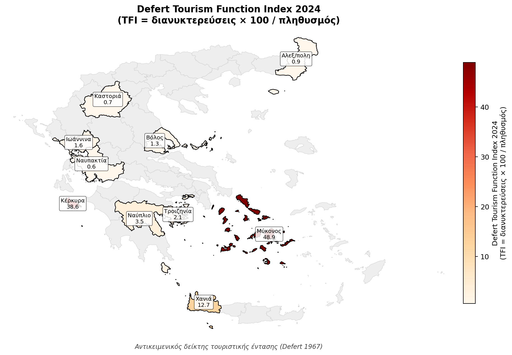
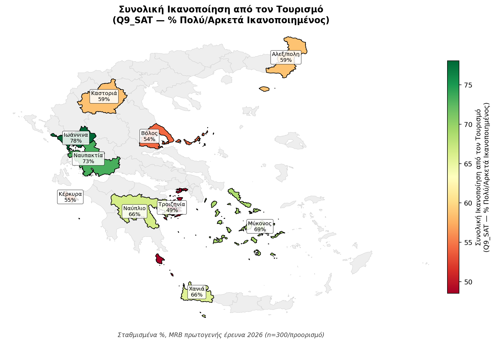
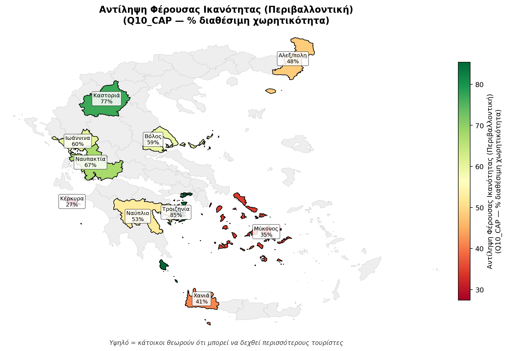
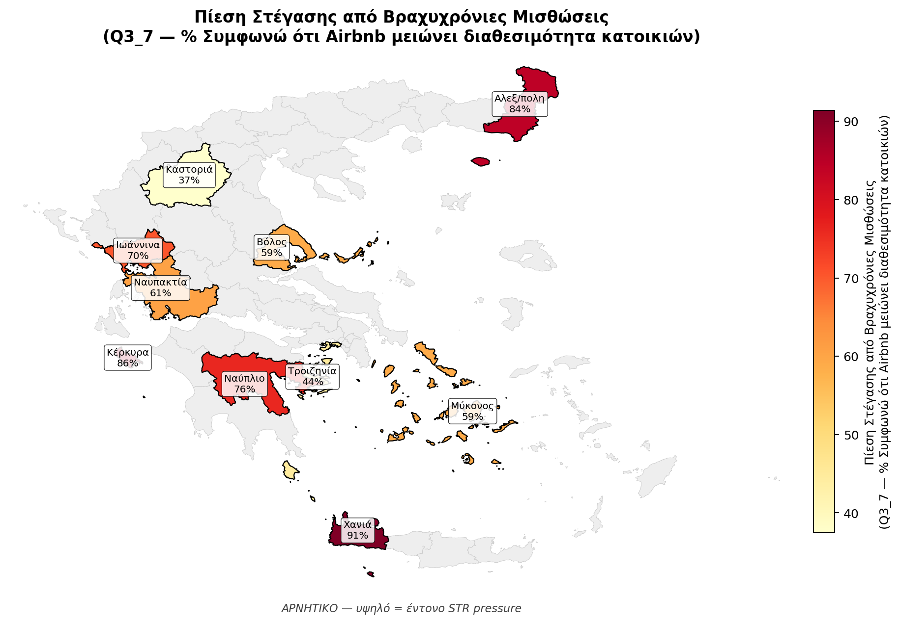

§ 13.1
Συγκριτικά Μεγέθη Δευτερογενούς Ανάλυσης
Τέσσερις δείκτες αποτυπώνουν τη συγκριτική θέση των δέκα προορισμών σε επίπεδο όγκου ζήτησης, ανάκαμψης από την πανδημία και διαρθρωτικής εξωστρέφειας.
Πίνακας 13.1 · Τουριστική ζήτηση και ανάκαμψη (2024)
| Προορισμός | Σύνολο αφίξεων | Μερίδιο αλλοδαπών | Ανάκαμψη 2024/2019 | CAGR αλλοδαπών |
|---|---|---|---|---|
| Κερκύρας | 2.674.773 | 87,6% | 1,178 | 7,81% |
| Χανίων | 1.359.014 | 88,7% | 1,088 | 5,69% |
| Μυκόνου | 557.339 | 90,2% | 0,878 | 8,70% |
| Ιωαννίνων | 441.906 | 19,0% | 0,913 | 10,85% |
| Ναυπλίου | 441.291 | 42,3% | 0,852 | 3,00% |
| Βόλου-Πηλίου | 331.331 | 20,6% | 1,020 | 6,53% |
| Αλεξ/πολης-Σαμοθράκης | 200.594 | 47,5% | 1,649 | 8,30% |
| Τροιζηνίας-Μεθάνων-Γαλατά | 184.748 | 39,5% | 1,224 | 8,21% |
| Ναυπακτίας | 149.621 | 22,6% | 1,618 | 6,17% |
| Καστορίας | 64.295 | 17,5% | 0,691 | 0,69% |
Πηγή: ΕΛΣΤΑΤ STO12 T03 + INSETE Intelligence. Η Μύκονος μόνη ώριμη με ανάκαμψη < 1 (Butler stasis). Καστοριά εμφανίζει μηδενικό σχεδόν CAGR αλλοδαπών (διαρθρωτική στασιμότητα).
Πίνακας 13.2 · Φέρουσα Ικανότητα Defert (βασικό) και Εποχικότητα
| Προορισμός | TFI Defert | TII Defert | Gini εποχικότητας | % Υψ. σεζόν |
|---|---|---|---|---|
| Μυκόνου ¹ | 158,1 | 178,6 | 0,512 | 72,2% |
| Κερκύρας | 49,9 | 26,33 | 0,545 | 76,1% |
| Ναυπλίου ² | 19,6 | 21,7 | 0,333 | 57,6% |
| Ναυπακτίας ³ | 16,45 | 15,65 | 0,203 | 46,2% |
| Χανίων | 33,1 | 8,67 | 0,478 | 68,6% |
| Ιωαννίνων ⁴ | 4,94 | 5,665 | 0,280 | 55,5% |
| Βόλου-Πηλίου ⁵ | 5,95 | 3,96 | 0,296 | 55,7% |
| Αλεξ/πολης-Σαμοθράκης ⁶ | 2,785 | 3,315 | 0,374 | 64,2% |
| Καστορίας | 3,612 | 2,407 | 0,151 | 37,9% |
| Τροιζηνίας-Μεθάνων-Γαλατά ⁷ | 0,72 | 0,93 | 0,198 | 47,3% |
Canonical Defert convention: TFI = (κλίνες × 100) / πληθυσμό· TII = διανυκτερεύσεις / πληθυσμό.
Χωρικές βάσεις: ¹ Δήμος Μυκονίων· ² 3 Δήμοι Ναυπλιέων-Επιδαύρου-Ερμιονίδας· ³ Δήμος Ναυπακτίας· ⁴ ΠΕ Ιωαννίνων (NUTS3)· ⁵ 3 Δήμοι Βόλου-Ζαγοράς-Νοτίου Πηλίου· ⁶ ΠΕ Έβρου· ⁷ Δήμος Τροιζηνίας-Μεθάνων.
Καστοριά: χαμηλότερο Gini αλλά ομοιόμορφα χαμηλή ζήτηση, όχι 12μηνη λειτουργία (μήνας αιχμής Οκτώβριος).
§ 13.2
Δείκτης Αντιληπτής Πίεσης Τουρισμού (POI θ̂)
Σταθμισμένη κατάταξη από την πρωτογενή έρευνα κατοίκων (n=3.000), μέσω Item Response Theory Graded Response Model (Samejima 1969) σε 19 δηλώσεις πίεσης. Pearson(POI, TFI βασικό 2024) = 0,711: η υποκειμενική και η αντικειμενική πίεση συγκλίνουν αλλά αναδεικνύονται διαγνωστικές αποκλίσεις.
Πίνακας 13.3 · Κατάταξη POI θ̂
| # | Προορισμός | POI θ̂ |
|---|---|---|
| 1 | Κερκύρας | +0,70 |
| 2 | Χανίων | +0,54 |
| 3 | Μυκόνου | +0,48 |
| 4 | Αλεξ/πολης-Σαμοθράκης | +0,25 |
| 5 | Ιωαννίνων | +0,04 |
| 6 | Ναυπλίου | −0,19 |
| 7 | Βόλου-Πηλίου | −0,24 |
| 8 | Ναυπακτίας | −0,25 |
| 9 | Καστορίας | −0,60 |
| 10 | Τροιζηνίας-Μεθάνων-Γαλατά | −0,68 |
Τέσσερις διαγνωστικές αποκλίσεις
Μύκονος — κανονικοποίηση κορεσμού
Αντικειμενικά ακραίο TII 178,6 με σχετικά διαχειρίσιμο POI +0,48. Οι κάτοικοι έχουν προσαρμοστεί στη μαζική παρουσία.
Χανιά — υπερευαισθησία STR
Μέτριο TFI 33,1 (ΠΕ) με υψηλό POI +0,54. Δήλωση συμφωνίας για πίεση βραχυχρόνιας μίσθωσης 91,4% (η υψηλότερη).
Σαμοθράκη — τοπικός υπερτουρισμός
Χαμηλό TFI ΠΕ Έβρου (2,785) αλλά POI +0,25 λόγω εντοπισμένου υπερτουρισμού στο νησί που δεν αποτυπώνεται στο NUTS3 aggregate.
Τροιζηνία — αμοιβαία επιβεβαίωση χαμηλής έντασης
Ελάχιστο TFI 0,72 με POI −0,68 (το χαμηλότερο). Ομογενής σύγκλιση αντικειμενικής και υποκειμενικής μέτρησης.
§ 13.3
Σταθμισμένη Doxey Τυπολογία (LCA)
Latent Class Analysis (Lazarsfeld & Henry 1968) σε 12 δηλώσεις στάσης κατοίκων, K=5 κλάσεις: C1 Αντιπαλότητα, C2 Ενεργή Ευφορία, C3 Ήπια Απάθεια, C4 Συγκρουσιακή Ενόχληση, C5 Καθαρή Ευφορία.
Πίνακας 13.4 · LCA 5-κλάσεις (% ανά προορισμό)
| Προορισμός | C1 Αντιπαλότητα | C2 Ενεργή Ευφορία | C3 Ήπια Απάθεια | C4 Συγκρ. Ενόχληση | C5 Καθαρή Ευφορία |
|---|---|---|---|---|---|
| Χανίων | 23,0 | 20,8 | 27,0 | 14,5 | 14,8 |
| Κερκύρας | 30,0 | 21,2 | 6,3 | 20,2 | 22,4 |
| Μυκόνου | 21,2 | 29,1 | 2,7 | 19,2 | 27,8 |
| Ναυπλίου | 10,8 | 18,0 | 18,4 | 10,3 | 42,4 |
| Βόλου-Πηλίου | 6,2 | 29,5 | 18,9 | 12,9 | 32,5 |
| Ιωαννίνων | 8,4 | 42,3 | 9,8 | 17,4 | 22,1 |
| Καστορίας | 3,7 | 29,7 | 24,2 | 7,3 | 35,1 |
| Αλεξ/πολης-Σαμοθράκης | 14,9 | 20,6 | 10,7 | 28,8 | 25,0 |
| Τροιζηνίας-Μεθάνων-Γαλατά | 1,6 | 30,2 | 14,7 | 5,0 | 48,5 |
| Ναυπακτίας | 7,7 | 19,7 | 18,6 | 14,4 | 39,6 |
Κέρκυρα — μοναδική κυρίαρχη Αντιπαλότητα
C1 = 30,0%. Συσσωρευμένη κοινωνική κούραση μετά από δεκαετίες μαζικού τουρισμού.
Τροιζηνία — ισχυρότατη νομιμοποίηση
C1 μόλις 1,6% και C5 = 48,5%. Η ισχυρότερη κοινωνική νομιμοποίηση στο σύνολο του παραδοτέου.
Αλεξανδρούπολη-Σαμοθράκη — Συγκρουσιακή Ενόχληση
Μοναδική κυρίαρχη C4 = 28,8%. Διπολική κοινωνική δυναμική.
Χανιά — Ήπια Απάθεια
Μοναδική κυρίαρχη C3 = 27,0%. Pattern κοινωνικής επούλωσης σε ώριμο τουριστικό περιβάλλον.
§ 13.4
Εμπειρική Τυπολογία 4 Κατηγοριών
Σύνθεση αντικειμενικών και υποκειμενικών δεικτών. Η τυπολογία υπερβαίνει τη διχοτόμηση «ώριμοι έναντι αναπτυσσόμενων» σε δύο σημεία: η Μύκονος διακρίνεται ως ξεχωριστή κατηγορία· οι ηπειρωτικοί μικτοί διαφοροποιούνται από τους πραγματικά αναδυόμενους.
Α
Νησιωτικοί κορεσμένοι
Κέρκυρα · Χανιά
Χαρακτηριστικά: > 1 εκ. αφίξεις, TII 8-26, Gini > 0,47, αλλοδαποί > 87%.
Στρατηγική: Αποεποχικοποίηση, ποιοτική αναβάθμιση, ρύθμιση STR.
Β
Νησιωτικός υπερκορεσμός
Μύκονος
Χαρακτηριστικά: ADR > 600 €, ακραίος TII 178,6 (Δήμος, βασικό), αναγνωρισμένος κορεσμός.
Στρατηγική: Διαχείριση όγκου, visitor caps, πράσινο τέλος, διαφοροποίηση κοινού.
Γ
Ηπειρωτικοί μικτοί
Ναύπλιο · Βόλος-Πήλιο · Ιωάννινα · Τροιζηνία-Μέθανα-Γαλατάς
Χαρακτηριστικά: 180-450 χιλ. αφίξεις, μικτή αγορά, μέτρια εποχικότητα.
Στρατηγική: Διεθνοποίηση, branding, τετράμηνη τουριστική περίοδος, εμπλουτισμός προϊόντος.
Δ
Αναδυόμενοι
Αλεξανδρούπολη-Σαμοθράκη · Ναυπακτία · Καστοριά
Χαρακτηριστικά: < 200 χιλ. αφίξεις, TII < 1,5, σημαντικό φυσικό κεφάλαιο.
Στρατηγική: Στρατηγική τοποθέτηση, υποδομές, αναγνωρισιμότητα, εμπλοκή κοινωνικής βάσης.
§ 13.5 · ΠΡΩΤΟΤΥΠΗ ΣΥΝΕΙΣΦΟΡΑ
5-Ζώνη × 3-Κατευθύνσεις Ταξινόμηση Ενδογενούς Κριτικής
Πρωτότυπη θεωρητική συνεισφορά της Λευκής Βίβλου στη διεθνή βιβλιογραφία. Διπλό πλέγμα ταξινόμησης: (α) Ζώνη προ-κορεσμός (σχέση Defert × POI) × (β) Κατεύθυνση Ενδογενούς Κριτικής (διαφορική γνώση τουριστικά απασχολούμενων TOUR έναντι λοιπών κατοίκων NOT).
Τρεις κανονικές κατευθύνσεις + μία απενεργοποιημένη
CLASSIC (Δpp > 0 στους δείκτες πίεσης)
Οι τουριστικά απασχολούμενοι αναγνωρίζουν συστηματικά περισσότερη πίεση μέσω προνομιακής front-line λειτουργικής γνώσης.
REVERSE (Δpp < 0)
Οι τουριστικά απασχολούμενοι αναγνωρίζουν συστηματικά λιγότερη πίεση μέσω εξειδικευμένης πραγματιστικής γνώσης κλίμακας.
STEWARD · NOVEL ΛΕΥΚΗΣ ΒΙΒΛΟΥ
Οι τουριστικά απασχολούμενοι υποστηρίζουν ενεργά τη ρυθμιστική παρέμβαση ως προληπτικό μηχανισμό προστασίας. Μοναδική νέα συνεισφορά, εμπειρικά τεκμηριωμένη στη Ναυπακτία.
κατώφλι-απενεργοποιημένη
Συστηματική απενεργοποίηση λόγω βαθιά υπο-τουριστικό περιβάλλον πλαισίου (Δpp συμπιεσμένα κάτω από κατώφλι 8-10pp).
Πίνακας 13.6 · Ταξινόμηση ανά προορισμό ()
| Προορισμός (Κεφ.) | Ζώνη προ-κορεσμός | Κατεύθυνση |
|---|---|---|
| Κέρκυρα (4) | Ώριμη επιθετική | Ώριμη CLASSIC |
| Χανιά (5) | Ώριμη ισχυρή | Ώριμη CLASSIC |
| Μύκονος (6) | Ώριμη extreme | Ώριμη CLASSIC |
| Ναύπλιο (7) | Ώριμος ηπειρωτικός healthy | Ώριμη CLASSIC |
| Βόλος-Πήλιο (8) | Ζώνη Γ-low post-Storm-Daniel | τάση προς αντίστροφο μοτίβο |
| Ιωάννινα (9) | Ζώνη Α προ-κορεσμός | CLASSIC |
| Καστοριά (10) | Ζώνη Β υπο-τουριστική | ισχυρό κλασικό μοτίβο |
| Αλεξ/πολη-Σαμοθράκη (11) | Ζώνη Α′ διπολική γεωγραφία | REVERSE |
| Τροιζηνία-Μέθανα-Γαλατάς (12) | Ζώνη Δ πολύ πρώιμο στάδιο ανάπτυξης | κατώφλι-απενεργοποιημένη |
| Ναυπακτία (13) | Ζώνη Γ-mid mid-pressure | Θεματοφύλακας (πρωτότυπη ταξονομία) (μοναδικό) |
κεντρική τεκμηρίωση STEWARD: «Στην περιοχή μου χρειάζονται μέτρα περιορισμού της τουριστικής δραστηριότητας» Δpp = +15,12 ποσοστιαίες μονάδες SIG (TOUR 24,83% «θετική στάση» (top-2 box: συμφωνώ + συμφωνώ απόλυτα) έναντι μη-απασχολούμενοι 9,71% «θετική στάση» (top-2 box: συμφωνώ + συμφωνώ απόλυτα)). Ναυπακτία Πίν. 13.34 + ΜΚ 13.6.1.α .
Θεωρητική σημασία
- Η σχέση τουριστικής απασχόλησης × αναγνώρισης πίεσης δεν είναι γραμμική. Εκδηλώνεται σε τρεις διακριτές κατευθύνσεις, αναιρώντας την υπόθεση γραμμικότητας της κλασικής Doxey (1975) και της Social Exchange Theory των Ap (1992) και Andereck et al. (2005).
- Το STEWARD μοτίβο της Ναυπακτίας είναι μοναδική νέα συνεισφορά. Οι ενδογενείς πληροφοριοδότες λειτουργούν ως «επιστάτες» προληπτικής ρύθμισης, υπερβαίνοντας τη βραχυχρόνια λογική του economic-stake effect.
- Η Ζώνη Γ είναι κλιμακούμενη αρχιτεκτονική. Διασπάται εμπειρικά σε Γ-low (Βόλος-Πήλιο τάση προς αντίστροφο μοτίβο) και Γ-mid (Ναυπακτία STEWARD UNIQUE) μέσω της αντικειμενικής Defert τιμής.
- Η Ζώνη Δ αποκαλύπτει νέα κατηγορία. Threshold-deactivated: το πρότυπο ενδογενούς κριτικής απενεργοποιείται σε βαθιά υπο-τουριστικό περιβάλλον πλαίσιο (Τροιζηνία TII 0,93, POI −0,68).
§ 13.6
LCA Πόλωση Κοινωνικής Στάσης
Καθαρή ισορροπία C5 − C1 αναδεικνύει το εύρος της κοινωνικής πόλωσης.
| Προορισμός | % C1 | % C5 | Καθαρή ισορροπία | Χαρακτηρισμός |
|---|---|---|---|---|
| Τροιζηνίας-Μεθάνων-Γαλατά | 1,6 | 48,5 | +46,9 | Έντονη θετική πόλωση |
| Ναυπακτίας | 7,7 | 39,6 | +31,9 | Υγιής υποστήριξη |
| Ναυπλίου | 10,8 | 42,4 | +31,6 | Υγιής υποστήριξη |
| Καστορίας | 3,7 | 35,1 | +31,4 | Υγιής υποστήριξη |
| Βόλου-Πηλίου | 6,2 | 32,5 | +26,3 | Υγιής υποστήριξη |
| Ιωαννίνων | 8,4 | 22,1 | +13,7 | Μετριασμένη |
| Αλεξ/πολης-Σαμοθράκης | 14,9 | 25,0 | +10,1 | Οριακή θετική |
| Μυκόνου | 21,2 | 27,8 | +6,6 | Διπολική |
| Χανίων | 23,0 | 14,8 | −8,2 | Πραγματική αρνητική |
| Κερκύρας | 30,0 | 22,4 | −7,6 | Μοναδική κυρίαρχη Αντιπαλότητα |
Κέρκυρα και Χανιά: οι μόνοι προορισμοί με αρνητική ισορροπία. Τροιζηνία: ισχυρότερη θετική (+46,9). Μύκονος: διπολική κοινωνία (21,2% αντίπαλοι + 27,8% υποστηρικτές).
§ 13.7
Τέσσερις Κοινές Προκλήσεις (10/10 προορισμοί)
01
Εποχικότητα παραμένει δομική
Κανένας προορισμός δεν έχει επιτύχει πραγματική 12μηνη λειτουργία. Καστοριά (Gini 0,151 χαμηλότερο όλων): ομοιόμορφα χαμηλή ζήτηση, όχι ισοκατανεμημένη υψηλή.
02
Αδιαφάνεια NACE I σε ΠΕ
Η ΑΠΑ Καταλύματος & Εστίασης δεν δημοσιεύεται αυτοτελώς σε NUTS3 από ΕΛΣΤΑΤ ή Eurostat. Εμποδίζει ακριβή υπολογισμό τουριστικού GDP τοπικά.
03
Έλλειψη ολοκληρωμένης STR ρύθμισης
Μερίδιο STR 10-25% στις αφίξεις, 16-28% στις διανυκτερεύσεις χωρίς ενιαίο εθνικό πλαίσιο. Αναλογία STR/ξενοδοχεία: 2:1 (Ναυπακτία) έως 6,6:1 (Καστοριά).
04
Χωρικές ανισότητες εντός προορισμού
Συγκέντρωση σε ζώνες (Κέρκυρα Πόλη, Πλατανιάς, Χώρα Μυκόνου, Παλιά Πόλη Ναυπλίου, Ζαγορά-Μουρέσι) αφήνοντας ενδοχώρες υπο-αξιοποιημένες.
§ 13.9
Πέντε Στρατηγικά Μηνύματα Εθνικού Επιπέδου
-
Μήνυμα 1
Ο ελληνικός υπερτουρισμός είναι τοπικά εντοπισμένος, όχι γενικευμένος
Σε 6 από τους 10 προορισμούς η αντικειμενική και υποκειμενική πίεση παραμένει χαμηλή. Η εθνική πολιτική πρέπει να εστιάσει σε 4 περιοχές υψηλής πίεσης: Κέρκυρα, Χανιά, Μύκονος, Σαμοθράκη.
-
Μήνυμα 2
Η Κέρκυρα συνιστά το πλέον επείγον στρατηγικό περιστατικό
Υψηλότερο POI θ̂ (+0,70), υψηλότερο % Αντιπαλότητας (30,0%), αρνητική ισορροπία LCA (−7,6). Απαιτεί συντεταγμένη παρέμβαση σε STR, διαφοροποίηση προϊόντος, εμπλοκή κατοίκων, αποεποχικοποίηση.
-
Μήνυμα 3
Η 5-Ζώνη × 3-Κατευθύνσεις Ταξινόμηση αναιρεί την κλασική Doxey γραμμικότητα
Σε διαφορετικές ζώνες προ-κορεσμός η σχέση εκδηλώνεται σε διακριτές κατευθύνσεις. Η κοινωνική παρακολούθηση δεν μπορεί να βασιστεί μόνο σε γενικευμένες έρευνες· απαιτεί στρωματοποιημένη ανάλυση με ρητή αναγνώριση Ζώνης και Κατεύθυνσης.
-
Μήνυμα 4
Η Τροιζηνία αναδεικνύεται ως ο πιο αναξιοποίητος προορισμός
POI θ̂ −0,68, LCA θετική ισορροπία +46,9, αντικειμενικά χαμηλή ένταση. Ιδανικός προορισμός-υπόδειγμα για νέο μοντέλο αναπτυξιακής ένταξης με προ-εγκατεστημένη κοινωνική νομιμοποίηση.
-
Μήνυμα 5
Η Μύκονος αξίζει αυτοτελή μελέτη περίπτωσης
Μοναδικός με ταυτόχρονη Butler stasis (recovery 0,878), ακραίο TII (178,6 Δήμος Μυκόνου βασικό) και διπολική κοινωνική στάση (21,2% Αντιπαλότητα + 27,8% Καθαρή Ευφορία). Θα τεκμηριώσει βέλτιστες πρακτικές διαχείρισης ώριμου τουρισμού σε ευρωπαϊκή κλίμακα.
§ 13.10
Χωρική Ανάλυση 10 Προορισμών
Πέντε χάρτες που συνθέτουν τη χωρική διάσταση της μελέτης σε εθνικό επίπεδο NUTS3: ένας bivariate που συνδυάζει αντικειμενική και υποκειμενική πίεση, και τέσσερις thematic choropleths για τους κύριους δείκτες πρωτογενούς έρευνας + φέρουσας ικανότητας.
Αντικειμενική × Υποκειμενική Πίεση
Bivariate choropleth που συνδυάζει Δείκτη Τουριστικής Λειτουργίας Defert (TFI 2024) ως αντικειμενική πίεση και σταθμισμένη ικανοποίηση κατοίκων (Q9_SAT) ως υποκειμενική. Τέσσερις διακριτοί κάδροι: Mature managed · Saturated & δυσαρέσκεια · Pre-saturation · Sleeping potential.

Σύνθεση WP-β (subgroup estimates) + WP-δ (Defert canonical). Σταθμίσεις WEIGHT_TRIMMED. Σύνορα NUTS3: Eurostat NUTS 2024 (1:1M).
Τέσσερις thematic choropleths σε εθνική κλίμακα
Σχήμα 13.10α · Φέρουσα ικανότητα
Δείκτης Τουριστικής Λειτουργίας TFI 2024

TFI = (κλίνες × 100) / πληθυσμός. Κανονικός Defert (1967). Όρια Saveriades: <5 χαμηλή, 5-10 μέτρια, >15 υπερκορεσμός.
Σχήμα 13.10β · Ικανοποίηση κατοίκων
Σταθμισμένο Q9_SAT — % Πολύ/Αρκετά Ικανοποιημένος

Πρωτογενής έρευνα κατοίκων, σταθμισμένο %, n=3.000.
Σχήμα 13.10γ · Δεκτικότητα
Q10_CAP — αναγνώριση δεκτικότητας περισσότερων τουριστών

Πρωτογενής έρευνα κατοίκων, σταθμισμένο %, ερώτηση δεκτικότητας.
Σχήμα 13.10δ · Πίεση από βραχυχρόνια μίσθωση
Q3.7 — αναγνώριση επιβάρυνσης ενοίκων από STR

Πρωτογενής έρευνα κατοίκων, σταθμισμένο %, αναγνώριση STR στεγαστικής πίεσης.
Πηγή χωρικών σχεδίων: Python geopandas/matplotlib · NUTS3 Eurostat 2024 · Πρωτογενή σταθμισμένα ποσοστά WP-β.
Πλήρης ανάλυση
Στο παραδοτέο docx
- 📘 Κεφάλαιο 13 — Συγκριτική Ανάλυση (10 ενότητες, πλήρης μεθοδολογική θεμελίωση)
- 📗 Παράρτημα Α — 9 πίνακες cross-destination master panels (δυναμικό, STR, περιβάλλον)
- 📕 Παράρτημα Ε — Πίνακες πρωτογενούς έρευνας (POI θ̂, LCA shares, Doxey)
- 📒 Παράρτημα Η — Quadrant strategic ανάλυση: Αντικειμενική × Υποκειμενική Φέρουσα Ικανότητα
- 📓 Κεφάλαιο 13 ΜΚ 13.6.1.α — Κανονική θεμελίωση 5-Ζώνη × 3-Κατευθύνσεις (Ναυπακτία)